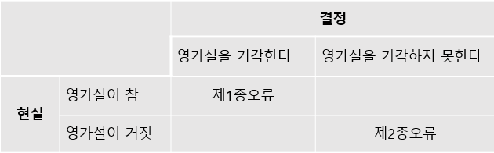
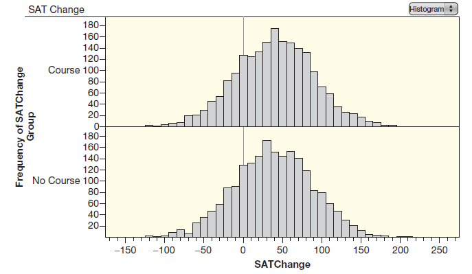
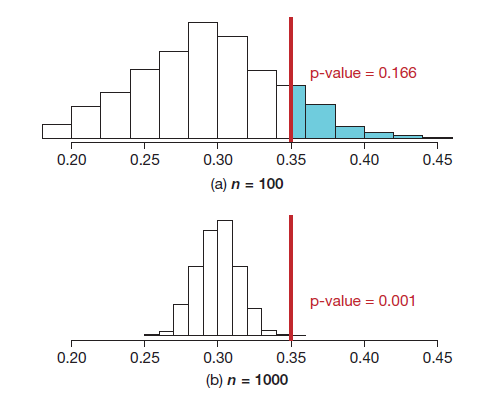

4.4 가설검증의 오류
가설검증으로 관측 효과가 실제 존재하는 것인지 아니면 그저 우연히 발생한 것인지 밝힐 수 있으므로 다양한 분야에서 쓸모가 있는 강력한 통계 기법이다. 하지만 가설검증은 잘못된 결론을 내릴 수도 있다. 참인 영가설을 기각하거나, 거짓인 가설을 기각하지 못하는 경우가 있다. 이 절은 공식적인 가설검증의 위험성을 다룬다.
제1종오류와 제2종오류
공식적인 가설검증의 결과는 “영가설을 기각한다” 또는 “영가설을 기각하지 못한다” 중 하나다. 현실에서 영가설이 기술하는 모집단에 관한 주장은 “참” 또는 “거짓” 중 하나만 가능하다.
밤에 켜놓은 전깃불이 몸무게를 증가시키는 원인일 수도 있지만(\(H_a\)), 전깃불의 효과는 없고(\(H_0\)) 표본 차이는 그저 우연히 발생한 것일 수도 있다. 우리가 “영가설을 기각한다”고 결정할 때, 참인 영가설을 잘못 기각하는 위험이 존재한다.
예를 들어, 영가설이 참인 상황에서 1,000개의 표본 중에 하나는 영가설을 기각하는 표본이 나올 수도 있다고 하자. 운이 나쁘게도 지금 그런 표본이 나와 영가설을 잘못 기각했는지 모른다.
참인 영가설을 잘못 기각하는 실수를 제1종오류(Type I error)라고 부른다. 거짓인 영가설을 기각하지 못할 때도 실수가 발생하는데 이 오류는 제2종오류(Type II error)라고 부른다. 표로 정리한 결과가 아래에 있다.
의학에서는 제1종오류를 “거짓 양성(false positive)”이라 부른다. 질병이 없는 환자의 검사 결과가 양성(질병이 있음)으로 나온 경우이다. 제2종오류는 “거짓 음성(false negative)”인데 질병이 있는 환자의 검사 결과가 음성(질병이 없음)으로 나온 경우이다.

예제 4.23. 다음 각각의 경우 제1종오류와 제2종오류가 무엇인지 기술하라.
(1) 밤에 전깃불을 켜놓는 실험에서 가설
- \(H_0: \mu_L = \mu_D\) vs \(H_a: \mu_L > \mu_D\)
(2) 신비의 동물 X가 있을 때 가설
- \(H_0\): X는 코끼리이다 vs \(H_a\): X는 코끼리가 아니다
풀이 (클릭하면 풀이가 보입니다)
(1) 제1종오류는 참인 영가설을 기각할 때 발생한다. 제1종오류는 밤에 켜놓은 전깃불은 어떤 효과도 없는 데 몸무게를 증가시킨다고 결론을 내릴 때 발생한다.
제2종오류는 거짓인 영가설을 기각하지 못할 때 발생한다. 제2종오류는 밤에 켜놓은 전깃불이 실제로 몸무게를 증가시키지만 이를 뒷받침하는 표본이 나오지 않을 때 발생한다.
(2) X는 실제 코끼리(서커스에서 훈련한 코끼리)인데, 코끼리가 아니라는 아주 드문 증거(두 다리를 걷는다)가 나와 X가 코끼리가 아니라고 결론 내릴 때 제1종오류가 발생한다.
코끼리가 가진 흔한 증거(다리 \(4\)개를 갖고 있다)를 발견하고 영가설을 기각하지 않았는데 X는 코끼리가 아닌 기린이었다. 제2종오류가 발생한 것이다.
유의한 결과를 얻어 영가설을 기각했다면, 우리가 올바른 결정을 내린 것인지 아니면 제1종오류를 범한 것인지 모른다. 마찬가지로 유의한 결과가 나오지 않아 영가설을 기각하지 못했다면, 우리가 올바른 결정을 내렸을 수도 있지만 제2종오류를 범한 것일지도 모른다. 이런 실수를 저지를 가능성을 전적으로 배제할 수는 없지만, 실수를 범할 가능성을 어느 정도 제어할 수는 있다.
확인문제 1. 다음 중 제1종 오류에 대한 설명으로 올바른 것은 무엇인가?
1 참인 영가설을 기각하는 오류.
2 거짓인 영가설을 기각하지 못하는 오류.
3 참인 대안가설을 기각하는 오류.
4 거짓인 대안가설을 기각하는 오류.
확인문제 2. 제2종 오류는 어떤 경우에 발생하는가?
1 영가설이 참일 때 영가설을 기각하는 경우.
2 영가설이 거짓일 때 영가설을 기각하는 경우.
3 영가설이 참일 때 영가설을 기각하지 못하는 경우.
4 영가설이 거짓일 때 영가설을 기각하지 못하는 경우.
확인문제 3. 다음 중 제1종 오류가 발생하는 상황으로 적절한 것은 무엇인가?
1 코끼리가 실제로 두 다리로 걷는 모습을 보고, 그것만으로 X가 코끼리가 아니라고 결론 내리는 경우.
2 코끼리가 네 다리를 가진 흔한 증거를 발견했음에도 불구하고 X가 코끼리가 아니라고 결론 내리는 경우.
3 질병이 없는 환자에게 질병이 없다고 진단하는 경우.
4 질병이 있는 환자에게 질병이 없다고 진단하는 경우.
확인문제 4. 가설검증에서 p-값이 \(0.03\)이고 유의수준 \(\alpha = 0.05\)일 때, 어떤 결정을 내려야 하는가?
1 영가설을 기각할 수 없다.
2 영가설을 기각한다.
3 유의수준을 \(0.01\)로 변경해야 한다.
4 p-값이 \(0.03\)보다 큰 경우만 영가설을 기각할 수 있다.
확인문제 5. 제1종 오류와 제2종 오류의 차이점에 대해 설명한 것으로 옳은 것은 무엇인가?
1 제1종 오류는 영가설이 거짓일 때 발생하며, 제2종 오류는 영가설이 참일 때 발생한다.
2 제1종 오류는 영가설이 참일 때 발생하고, 제2종 오류는 영가설이 거짓일 때 발생한다.
3 제1종 오류는 p-값이 \(0.5\) 이상일 때 발생하며, 제2종 오류는 p-값이 \(0.5\) 이하일 때 발생한다.
4 제1종 오류와 제2종 오류는 동일한 상황에서 발생한다.
유의수준과 오류
양쪽 타입의 오류를 피하고 싶지만, 실제로는 둘 사이에 균형을 취할 수밖에 없다. 영가설을 기각하기 어렵게 만들면 제1종오류를 범할 가능성을 줄일 수 있다. 하지만 제2종오류를 범할 가능성이 증가한다. 다른 한편으로 영가설을 쉽게 기각할 수 있게 하면 제2종로류는 줄어들지만, 제1종오류가 증가해서 참인 영가설을 너무 많이 기각한다.
따라서 영가설 기각을 쉽게 하느냐 아니면 어렵게 하느냐 기준을 정해서 균형을 취해야 한다. 이 기준의 역할을 하는 것이 바로 유의수준이다.
제1종오류를 범할 가능성을 줄이려면 유의수준을 작게 설정하여 영가설 기각을 어렵게 만든다. 제2종오류를 범할 가능성을 줄이려면 유의수준을 크게 설정하여 영가설 기각을 쉽게 만든다.
오른쪽 꼬리 검증에서 유의수준이 \(5\%\)일 때, 임의화 분포에서 상위 \(5\%\) 영역에 있는 모든 표본은 영가설을 기각한다. 유의수준이 \(1\%\)이면 상위 \(1\%\) 표본은 영가설을 기각한다. 유의수준이 작아지면 극단적인 표본도 적어지므로 영가설을 덜 기각한다.
통계량 중에 \(5\%\)는 임의화 분포에서 극단적인 \(5\%\)에 속하므로, 통계량 중에 \(5\%\)는 p-값이 \(0.05\)보다 작게 나온다. 임의화 분포는 영가설이 참이라는 가정에서 만들어졌기 때문에, 영가설이 참이라도 \(\alpha = 0.05\)에서 표본 중 \(5\%\)는 영가설을 기각한다. 이 성질은 유의수준이 \(0.05\)가 아닌 다른 값일 때도 똑같이 성립하므로 \(\alpha\)는 제1종오류를 범할 확률이다.
제1종오류의 결과가 심각할 때(예를 들면, 위험할 수도 있는 신약 판매 허용), \(\alpha\)를 \(0.001\)과 같이 아주 작은 값을 사용한다. 제2종오류의 결과가 심각할 때는(예를 들면, 치료할 수 있는 질병의 진단), 비교적 큰 \(\alpha\)를 사용하여 영가설 기각을 쉽게 만든다. 명심할 것은 두 종류의 오류 중에서 항상 균형을 유지하는 것인데 흔히 사용하는 \(\alpha\)는 \(5\%\), \(10\%\), \(1\%\)이다.
예제 4.24. 가설검증을 법정의 재판과 비교해서 생각하면 도움이 된다. 아래 기술에서 밑줄 친 단어나 구절을 가설검증에서 유추하라.
(1) 사람은 유죄라고 증명될 때까지 무죄이다.
(2) 제시된 증거는 합리적인 의심을 넘어 피의자가 유죄임이 입증되어야 한다.
(3) 재판장이 범할 수 있는 실수는 두 가지이다.
- 유죄인 사람을 무죄 판결
- 무죄인 사람을 유죄 판결
풀이 (클릭하면 풀이가 보입니다)
(1) ’무죄’는 영가설(반대되는 확실한 증거가 나타날 때까지 사실이라고 가정)이다. ’유죄’는 대안가설이다.
(2) ’증거’는 표본 데이터와 p-값이다. ’합리적인 의심’은 유의수준 \(\alpha\)이다. 피의자가 무죄라면 발생하기 어려운(\(\alpha\)보다 작다) 증거(p-값)가 나왔을 때 무죄(\(H_0\))라는 주장을 기각하고 피의자는 유죄(\(H_a\))라고 판결한다.
(3) ’유죄인 사람을 무죄 판결’하는 것은 제2종오류이다. 거짓인 영가설을 기각하는 증거를 찾지 못해서 오류가 발생했다. ’무죄인 사람을 유죄 판결’은 제1종오류이다. 참인 영가설을 기각하는 충분한 증거(사실은 잘못된 증거)를 찾아서 오류가 발생했다. 우리 법 체계는 제1종오류(무죄인 사람을 유죄 판결)를 제2종오류(유죄인 사람을 무죄 판결)보다 더 심각하게 생각한다. 또한 법체계에는 균형도 있다. 중벌을 내릴 때는 더 확실한 증거를 요구한다.
확인문제 1. 유의수준 \(\alpha\)가 \(0.01\)일 때, 임의화 분포에서 영가설을 기각하는 표본의 비율은 대체로 얼마인가?
1 \(1\%\)
2 \(5\%\)
3 \(10\%\)
4 \(50\%\)
확인문제 2. 유의수준 \(\alpha\)가 \(0.05\)일 때, 임의화 분포에서 영가설을 기각하는 표본의 비율은 대체로 얼마인가?
1 \(1\%\)
2 \(5\%\)
3 \(10\%\)
4 \(50\%\)
확인문제 3. 다음 중 유의수준 \(\alpha\)가 작아질 때 발생하는 결과로 올바른 것은 무엇인가?
1 제1종오류의 확률이 증가한다.
2 제2종오류의 확률이 증가한다.
3 표본을 쉽게 기각할 수 있게 된다.
4 표본 기각이 어려워진다.
확인문제 4. 제1종 오류가 발생할 때의 상황으로 올바른 것은 무엇인가?
1 실제로 효과가 없는데, 효과가 있다고 결론 내린다.
2 실제로 효과가 있는데, 효과가 없다고 결론 내린다.
3 표본에서 통계량이 유의미하지 않다고 결론 내린다.
4 영가설을 기각하지 못한다.
확인문제 5. 제2종 오류가 발생할 때의 상황으로 올바른 것은 무엇인가?
1 실제로 효과가 없는데, 효과가 있다고 결론 내린다.
2 실제로 효과가 있는데, 효과가 없다고 결론 내린다.
3 표본에서 통계량이 유의미하지 않다고 결론 내린다.
4 영가설을 기각하지 못한다.
다중 검증의 문제
영가설이 참일 때, \(5\%\) 유의수준을 사용하는 가설검증이 영가설을 잘못 기각하는 비율은 \(5\%\)임을 배웠다. 이 문제는 다중 검증을 할 때 더욱 중요하다. \(\alpha = 0.05\)일 때, 참인 영가설에 대한 모든 가설검증 중에서 \(5\%\)는 영가설을 기각한다. 즉, 실제는 효과가 없는데(영가설이 참), \(100\)개의 가설검증 중 \(5\%\)는 효과가 있다고 결론 내린다(영가설을 잘못 기각).
예제 4.25. 실내에서 우산을 펴면 불운한 일이 생길까? 전 세계의 많은 연구자가 이것이 사실인지 검증한다고 가정하자. 각 연구자는 무작위로 사람들이 실내에서 우산을 펴거나 실외에서 우산을 펴도록 하고, 그 후에 어떤 식으로든 “운”을 측정한다고 가정하자. 실내에서 우산을 펴더라도 불운을 가져오지 않는다고 할 때, \(\alpha = 0.05\)로 \(100\)명의 사람을 검증하면 통계적으로 유의한 결과는 대략 몇 명 나올 것으로 예상하는가?
풀이 (클릭하면 풀이가 보입니다)
영가설이 참일 때(실내에서 우산을 펴는 것은 운에 영향을 끼치지 않는다), 검증의 약 \(5\%\)는 우연히 p-값이 \(0.05\)보다 작게 나올 것이다. \(100\)명 중 대략 \(5\)명은 통계적으로 유의한 결과를 얻을 것이다.
효과가 존재하지 않은 영가설에 대한 검증을 여러 번 수행하면, 그들 중 몇몇은 우연히 유의한 결과가 나온다. 검증 횟수가 증가할수록 하나라도 제1종오류를 범할 확률은 높아진다. 이 문제를 다중 검증(multiple testing) 문제라고 한다.
이 문제는 보통 유의한 결과만 발표되기 때문에 더욱 악화된다. 이 문제를 출판편향(publication bias)이라고 부른다. 만약 연구자가 유의한 결과만 발표한다면, 유의하지 않은 연구 결과의 존재를 우리는 모를 것이다.
우산 예를 들어보자. 만약 통계적으로 유의한 연구 결과 \(5\)개만 발표되고, \(95\)개의 유의하지 않은 연구의 존재를 알지 못한다면, 실내에서 우산을 펴면 정말로 불운이 온다는 증거로 받아들일 수 있다. 불행히도 과학 연구에는 이런 문제가 현실적으로 존재한다.
다중 검증의 문제는 연구자가 여러 가설을 동시에 검증할 때도 발생한다.
예제 4.26. 유전자가 특정 질병 또는 특성과 연관되어 있는지에 대한 검사인 게놈 연구는 현재 의학 연구, 특히 암 연구에 널리 사용되고 있다. 사람에게서 DNA를 수집하면, 그들 중 몇몇은 문제의 질병과 연관이 있고, 몇몇은 그렇지 않다. 가장 유명한 게놈 연구 중 하나는 두 종류의 백혈병(급성 골수성 백혈병과 급성 림프성 백혈병)을 앓고 있는 환자들 사이의 유전적 차이를 검사한 것이다. 이 연구에서 과학자는 백혈병 환자 \(38\)명의 \(7129\)개의 유전자 데이터를 수집했다. 각 유전자가 백혈병의 종류와 연관이 있는지 검증한다.
(1) 백혈병의 종류에 따라 유전적인 차이는 없다고 가정하자. 유의수준 \(0.01\)에서 모든 검증을 수행할 때, 통계적으로 유의한 유전자는 몇 개 정도 나올까?
(2) 통계적으로 유의한 유전자 모두 백혈병 종류와 실제로 연관이 있다고 생각하는가?
(3) 실제 연구 결과, 유전자 중 \(11\%\)는 p-값이 \(0.01\)보다 작았다. 유전자와 백혈병 종류 사이에 연관이 있다고 생각하는가?
풀이 (클릭하면 풀이가 보입니다)
(1) 백혈병 종류에 따라 유전적인 차이가 없을 때, 대략 \(1\%\)의 검증은 우연히 통계적으로 유의한 결과가 나온다. 유전자 중 약 \(0.01 \times 7129 \fallingdotseq 71\) 개 유전자는 통계적으로 유의할 것이라고 예상한다.
(2) 연관이 없더라도 약 \(71\)개 유전자는 통계적으로 유의하다는 결과가 우연히 나올 것이다. 따라서 유의하다고 나온 모든 유전자를 백혈병 종류와 실제 연관이 있다고 생각하면 안 된다.
(3) 모든 유전자가 백혈병과 연관이 없다면, 전체 검증 중 약 \(1\%\)는 p-값이 \(0.01\)보다 작게 나올 것이다. \(11\%\) 유전자의 p-값이 \(0.01\)보다 작게 나왔으므로 몇몇 유전자는 백혈병 종류와 연관이 실제 있을 것이다.
다중 검증 문제를 해결하는 통계 기법이 여러 가지 있지만 이 강의의 수준을 넘어선다. 가장 중요한 것은 이런 문제가 있다는 것을 깨닫는 것이다. 다중 검증에서 유의하다고 나온 결과 중 몇몇은 그저 우연히 유의하게 나온 것임을 명심하자.
확인문제 1. 다중 검증에서 영가설이 참일 때, 유의수준 \(\alpha = 0.05\)로 \(100\)번의 가설검증을 하면, 그 중 몇 개는 우연히 통계적으로 유의한 결과가 나올 것인가?
1 \(1\)개
2 \(5\)개
3 \(10\)개
4 \(50\)개
확인문제 2. 다중 검증에서 연구자가 여러 번의 검증을 수행할 때, 검증 횟수가 많아질수록 무엇이 증가하는가?
1 제1종 오류
2 제2종 오류
3 표본의 크기
4 p-값
확인문제 3. 다음 중 다중 검증 문제의 특징으로 알맞은 것은 무엇인가?
1 영가설을 기각하기 어려워진다.
2 검증 횟수가 늘어나면 제1종 오류의 확률이 증가한다.
3 검증 횟수가 많아지면 유의한 결과가 적어진다.
4 표본을 무작위로 선택하는 것이 중요하다.
확인문제 4. 출판편향(publication bias)이 발생하는 이유는 무엇인가?
1 유의하지 않은 결과만 발표되기 때문이다.
2 유의한 결과만 발표되기 때문이다.
3 p-값이 너무 커서 유의하지 않은 결과가 발표된다.
4 제2종 오류를 방지하기 위해 유의한 결과만 발표된다.
확인문제 5. 유전자 연구에서 \(7129\)개의 유전자에 대한 검증을 할 때, 유의수준 \(0.01\)에서 통계적으로 유의한 유전자는 대체로 몇 개가 나올 것으로 예상되는가?
1 \(1\)개
2 \(71\)개
3 \(500\)개
4 \(100\)개
복제 연구
통계적으로 유의한 결과가 나왔을 때, 불행히도 우리는 전체 모집단을 조사할 수 없다면 대안가설이 실제로 참인지 아니면 제1종오류가 발생했는지 결코 알 수 없다. 다중 검증이 수행되었거나 결과가 놀랍도록 현재의 과학 이론에 역행했을 때는 제1종오류가 더욱 의심스러울 수 있다.
연구 결과가 현재의 관행을 변화시킬 정도로 중요한 영향을 미칠 때, 제1종오류를 범하면 매우 심각한 사회 문제가 된다. 신약이 효과가 없는데 수백만 명에게 잠재적인 부작용이 있는 신약을 처방해도 좋은가? 이와 같은 상황에서 통계적 유의성을 산출하는 연구는 복제되거나 재현되어야 한다.
예제 4.27. 임상 시험은 신약이나 의학적 치료에 관한 연구인데 4단계로 진행된다. 1단계에서 새로운 치료법의 안전성을 연구한다. 2단계는 (대개 위약에 대해) 새로운 치료법의 효과를 검증한다. 2단계가 통계적으로 유의하면, 3단계 연구는 표본 크기를 더 키우거나 기존 치료법과 비교하는 복제 연구를 한다. 4단계는 신약이 시판된 후 약물 부작용 등과 같은 데이터를 수집하여 연구한다. 임상 시험에서 별도의 무작위 실험을 두 번 요구하는 이유를 설명하라.
풀이 (클릭하면 풀이가 보입니다)
2단계 실험에서 통계적으로 유의한 결과가 나왔을 때 치료 효과가 실제 있는 것인지 아니면 제1종오류가 발생했는지 확실히 알 수 없다. 광범위한 사용을 승인하기 전에 치료법이 실제로 효과가 있는지 확인하고, 결과를 재현하기 위해 다른 실험을 요구한다.
3단계 실험에서도 통계적으로 유의한 결과가 나왔을 때, 치료가 실제로 효과적이라는 것을 훨씬 더 확신할 수 있다. 3단계 실험에서 통계적으로 유의한 결과가 나오지 않는다면, 2단계 실험의 유의성은 단지 제1종오류의 결과일 뿐이다.
복제는 두 가지 이유로 임상 시험에서 중요한 안전장치이다. 하나는 많은 제약회사가 신약과 치료제를 항상 검증하고 있기에 우리는 다중 검증 문제를 안고 있다. 두 번째 이유는 실제 효과가 없는 신약이나 새로운 치료법을 효과가 있다고 결론 내릴 때, 사회에 매우 해로울 수 있다. 이유 없이 부작용을 겪을 수도 있고, 실제로 효과가 있는 다른 치료법보다 효과가 없는 치료법을 선택할 수도 있다.
연구 결과의 복제는 과학에서 매우 중요하기 때문에, 데이터 수집과 분석의 각 단계를 다른 연구자에게 투명하게 하여 완전히 재현 가능한 방법으로 연구해야 한다.
확인문제 1. 복제 연구에서, \(100\)개의 연구를 수행했을 때, 유의수준 \(0.05\)를 사용하면 몇 개의 연구에서 제1종 오류를 범할 수 있을까?
1 \(1\)개
2 \(5\)개
3 \(10\)개
4 \(50\)개
확인문제 2. 임상 시험 2단계에서, 통계적으로 유의한 결과가 나왔을 때 연구자가 다시 실험을 요구하는 이유는 무엇인가?
1 첫 번째 실험에서의 유의성은 단지 제2종 오류일 수 있기 때문이다.
2 유의성의 결과가 제1종 오류일 가능성을 배제할 수 없다.
3 표본 크기를 늘리기 위한 추가적인 실험을 진행하기 위해서이다.
4 두 번째 실험을 통해 효과가 없는 결과를 확인하려는 목적이다.
확인문제 3. 복제 연구가 중요한 이유 중 하나는 무엇인가?
1 연구자들이 연구 결과를 조작할 가능성이 있기 때문이다.
2 신약이나 치료법의 실제 효과가 없을 경우 사회에 미치는 해로움을 방지하기 위해서이다.
3 연구자가 실험을 반복해서 수행할 수 없기 때문이다.
4 다중 검증을 통해서 유의한 결과를 더 많이 찾을 수 있기 때문이다.
확인문제 4. 복제 연구에서 다중 검증 문제를 해결하기 위해 연구자가 수행해야 할 행동은 무엇인가?
1 다른 연구자가 동일한 실험을 수행할 수 있도록 데이터를 제공한다.
2 연구 결과에 대한 모든 세부 정보를 은폐하여 결과를 잘못 해석하지 않도록 한다.
3 연구 데이터를 숨겨서 다른 연구자가 이를 확인할 수 없게 한다.
4 연구 결과를 발표하기 전에 다수의 외부 전문가의 검증을 받는다.
확인문제 5. 임상 시험에서 제1종 오류를 줄이기 위해 연구자는 유의수준을 어떻게 설정해야 하는가?
1 유의수준을 크게 설정한다.
2 유의수준을 작게 설정한다.
3 유의수준을 \(0.1\)로 설정한다.
4 유의수준을 1로 설정한다.
실제적 유의성과 통계적 유의성
한 회사가 SAT와 같은 표준화 시험을 다시 치를 때 점수를 향상시키는 온라인 학습 코스를 제공한다고 가정하자. 이 과정을 이수하면 SAT 점수가 오르는가? 성적을 향상시키는지 알기 위해 가설검증을 할 수도 있고 향상된 점수의 크기에 대한 신뢰구간을 구할 수도 있다.
SAT 시험을 다시 치르기 전에 학생을 온라인 코스 그룹과 스스로의 힘으로 공부하는 그룹에 무작위로 배치하여 비교하는 실험을 한다고 가정하자. 온라인 그룹의 평균 점수 변화는 \(\mu_c\), 스스로 공부하는 그룹의 평균 점수 변화는 \(\mu_n\)으로 표기할 때, 가설은 다음과 같다.
- \(H_0: \mu_c = \mu_n\)
- \(H_a: \mu_c > \mu_n\)
각 그룹에 \(2000\)명씩 무작위로 배치하여 아래 그림과 같은 히스토그램을 얻었다.

몇몇 학생의 점수는 하락했지만, 일반적으로 두 번째 SAT 시험을 치를 때 점수는 향상하는 경향이 있다. 온라인 그룹의 평균 점수 변화 \(\bar{x}_c = 42.7\), 스스로 공부하는 그룹의 평균 점수 변화 \(\bar{x}_n = 38.5\) 이다. 점수 차이 \(\bar{x}_c - \bar{x}_n = 42.7 - 38.5 = 4.2\) 이다. 임의화 분포에서 p-값은 약 \(0.0038\)이다. 보통 사용하는 유의수준에서 이 p-값은 매우 작으므로 영가설을 기각하는 아주 강한 증거를 얻었다. 온라인 코스를 이수하는 학생의 평균 점수가 더 많이 오른다고 결론 내린다.
유의성뿐만 아니라 온라인 코스를 이수하면 점수가 얼마나 향상되었는가도 우리의 관심이다. 두 그룹 사이의 평균 점수 차이에 대한 \(95\%\) 신뢰구간은 \((1.04, 7.36)\) 이다. SAT 시험의 총점은 \(800\)점인데 \(1\)점에서 \(7\)점 사이의 점수 향상이 가치가 있는가? 온라인 코스 비용은 $3,000이고 과정을 마치는데 \(50\)시간이 걸린다. 당신이라면 약 \(4\)점을 올리려고 스스로 공부하는 것보다 온라인 코스를 선택하겠는가?
예제 4.28. SAT 시험의 온라인 준비 코스가 성적을 향상시키는가에 대한 검증에서 점수 변화의 평균은 \(4.2\)점, p-값은 \(0.0038\)이다. 이 결과는 통계적으로 유의한가? 실제로도 유의한가?
풀이 (클릭하면 풀이가 보입니다)
p-값 \(0.0038\)은 매우 작은 값이므로 이 결과는 확실히 통계적으로 유의하다. 그러나 점수 향상은 단지 \(4.2\)점이므로 실제로는 유의하지 않다. 온라인 코스를 선택할 가치가 없을지도 모른다.
이 가상의 예는 통계적으로 유의한 차이가 실제적인 유의성은 없을 수도 있음을 시사한다. 특히 표본 크기가 클 경우, 총점 \(800\)점인 SAT 시험에서 \(4\)점처럼 다소 작은 차이가 통계적으로 유의하게 나타날 수 있다. 그렇다고 해서 이 차이가 온라인 강좌 수강 여부를 결정하는 개인에게 특별히 중요한 것은 아니다. 약간의 작은 차이가 중요할 수 있고, 큰 표본이 실제 효과를 밝히는 데 도움이 될 수 있지만, 통계적으로 유의한 것은 실질적으로 유의하다고 쉽게 판단하지 말아야 한다.
확인문제 1. 온라인 학습 코스를 이수한 그룹과 스스로 공부한 그룹의 SAT 점수 변화에 대한 가설검증을 수행한 결과, p-값이 \(0.0038\)로 나타났다. 이 p-값이 의미하는 바는 무엇인가?
1 점수 향상에 대한 통계적 유의성이 없음을 의미한다.
2 점수 향상에 대한 통계적 유의성이 있음을 의미한다.
3 실제로 점수 향상은 없으나 우연히 p-값이 작게 나온 것일 수 있다.
4 점수 향상은 실제로 유의하지 않지만, p-값이 작아서 통계적 유의성을 보인다.
확인문제 2. SAT 점수 향상에 대한 가설검증에서 평균 점수 변화가 \(4.2\)점, p-값이 \(0.0038\)로 나타났다. 이 결과에 대한 결론을 내리면 어떻게 되는가?
1 점수 변화가 크므로 온라인 학습 코스를 선택하는 것이 유의미하다.
2 p-값이 작기 때문에 이 결과는 통계적으로 유의하다. 그러나 점수 향상의 실제 효과는 미미하다.
3 p-값이 작으므로, \(4.2\)점의 점수 향상은 실제로 중요한 효과가 있다는 것을 의미한다.
4 유의수준을 변경해야만 이 결과를 받아들일 수 있다.
확인문제 3. 통계적으로 유의한 결과가 나왔을 때, 실제로도 유의한 결과인지 판단하는 것은 무엇을 기준으로 해야 하는가?
1 표본 크기
2 p-값의 크기
3 효과 크기와 실제 의미
4 실험의 유의수준
확인문제 4. 실제 SAT 시험 점수 변화에서 \(4\)점의 차이가 통계적으로 유의한 것으로 나타났다. 그러나 이 차이가 실제로 중요한지 판단할 때 어떤 요소가 고려되어야 하는가?
1 표본의 크기만 고려하면 된다.
2 p-값이 작은 것만 중요하고, 실제 효과는 무시한다.
3 점수 변화가 작은 경우 실제 효과의 중요성을 평가해야 한다.
4 \(4\)점의 변화가 아무리 작더라도 그 자체로 유의미한 결과이다.
확인문제 5. 온라인 학습 코스와 스스로 공부하는 그룹의 SAT 점수 차이를 비교한 결과, 유의수준 \(0.05\)에서 p-값이 \(0.0038\)로 나타났다. 이 결과가 의미하는 바는 무엇인가?
1 온라인 학습 코스를 이수한 학생의 점수 향상이 실제로 유의미하다.
2 유의수준 \(0.05\)에서 점수 변화가 통계적으로 유의하지 않다.
3 온라인 학습 코스를 선택한 그룹의 점수 변화가 우연히 일어났다고 결론을 내릴 수 있다.
4 통계적 유의성을 넘어서 실제로 점수 변화가 유의미한지 추가적으로 분석이 필요하다.
표본 크기의 효과
3.1절에서 표본 크기가 증가할수록 표본 통계량의 변동은 감소하고 표본 통계량은 모수의 참값에 가까워진다고 배웠다. 이 원리는 가설검증에서도 성립한다. 표본 크기가 증가하면, 영가설이 참일 때 우연히 발생하는 통계량의 변동도 감소한다.
예제 4.29. 앞에서 레스토랑 손님이 남은 음식의 포장을 부탁한 후 잊고 가는 손님의 비율을 검증하는 문제를 다루었다. 가설은 \(H_0: p = 0.3\) vs \(H_a: p > 0.3\) 이다. 다음 두 가지 경우 표본 통계량은 같지만 표본 크기는 다르다. p-값을 구하고 유의수준 \(5\%\)에서 영가설 기각 여부를 결정하라. 또한 문맥에 맞게 결론을 설명하라.
(1) \(\hat{p} = 0.35\), \(n = 100\)
(2) \(\hat{p} = 0.35\), \(n = 1000\)
풀이 (클릭하면 풀이가 보입니다)
(1) 표본 크기가 100인 경우 임의화 분포는 아래 그림 (1)이다. p-값 \(0.166\)은 유의수준 \(0.05\)보다 작지 않으므로 영가설을 기각하지 못한다. \(100\)명의 고객에서 표본 비율 \(0.35\)는, 남은 음식을 포장을 부탁하고 놓고 간 사람의 비율이 \(0.3\)보다 크다는 주장에 대한 확실한 증거를 제시하지 못한다.
(2) 아래 그림 (2)가 표본 크기가 1000인 경우의 임의화 분포이다. p-값 \(0.001\)은 유의수준 \(0.05\)보다 작으므로 영가설을 기각한다. \(1000\)명의 고객에서 표본 비율 \(0.35\)는, 남은 음식을 포장을 부탁하고 놓고 간 사람의 비율이 \(0.3\)보다 크다는 주장에 대하여 강한 증거를 제시한다.

위 예제에서 가설과 표본 통계량은 같고 표본 크기만 달랐다. 표본 크기가 100인 임의화 분포는 표본 크기가 1000인 임의화 분포보다 큰 변동을 가지는 것을 위 그림에서 알 수 있다. 결과적으로 실제 모비율이 \(0.3\)이라면, 표본 크기가 \(100\)일 때 \(0.35\)만큼 큰 표본 비율은 쉽게 발생할 수 있다. 하지만 표본 크기가 1000이라면 \(0.35\)만큼 큰 표본 비율은 관측하기 매우 어렵다. 대안가설이 참일 때, 표본 크기가 크면 영가설을 더 쉽게 기각할 수 있다.
이 절에서 공식적인 가설검증의 결과가 잘못될 수 있음을 배웠다. 영가설을 기각했을 때, 영가설이 실제 사실이고 제1종오류를 범했을 가능성은 항상 있다. 영가설을 기각하지 못했을 때 대안가설이 사실이고, 제2종오류를 범했을 수도 있다.
가설검증의 오류를 사전에 방지할 수는 없지만 유의수준을 조절하거나 표본 크기를 늘려서 오류 발생 가능성을 제어할 수 있다. 다중 검증을 할 때는 제1종오류가, 표본 크기가 작으면 제2종오류가 쉽게 발생한다. 제1종오류가 발생했는지 알려면 복제 연구가 이루어져야 한다.
통계적 추론에서 명심해야 할 것은 신뢰구간이 항상 모수를 포함하는 것은 아니라는 것이다. 또한 영가설이 사실이지만 영가설을 반박하는 통계적으로 유의한 결과가 나올 수 있으며, 영가설을 기각하지 않았다고 영가설이 참은 아니라는 점도 명심해야 한다.
확인문제 1. 레스토랑에서 손님이 남은 음식을 포장하고 놓고 간 비율에 대해 가설 검증을 진행하였다. 표본 크기가 \(100\)일 때 p-값이 \(0.166\)으로 나왔고, 표본 크기가 \(1000\)일 때 p-값이 \(0.001\)로 나왔다. 유의수준 \(5\%\)에서 영가설을 기각할지 여부를 판단하시오.
1 표본 크기가 \(100\)일 때만 영가설을 기각할 수 있다.
2 표본 크기가 \(1000\)일 때만 영가설을 기각할 수 있다.
3 두 경우 모두 영가설을 기각할 수 있다.
4 두 경우 모두 영가설을 기각할 수 없다.
확인문제 2. 영가설이 참일 때, 표본 크기가 커질수록 표본 통계량의 변동은 어떻게 변하는가?
1 표본 통계량의 변동이 커진다.
2 표본 통계량의 변동은 그대로 유지된다.
3 표본 통계량의 변동은 감소한다.
4 표본 통계량의 변동은 일정하게 증가한다.
확인문제 3. 영가설이 참일 때, 표본 크기가 증가하면 영가설을 더 쉽게 기각할 수 있다. 이 주장의 이유는 무엇인가?
1 표본 크기가 커지면 표본 통계량의 변동이 커져, 기각하기 쉬워진다.
2 표본 크기가 커지면 표본 통계량의 변동이 감소하여, 더 정확한 추론을 할 수 있다.
3 표본 크기가 커지면 p-값이 커져, 기각하기 쉬워진다.
4 표본 크기가 커지면 p-값이 작아져, 기각하기 어렵다.
확인문제 4. 다중 검증을 할 때, 제1종오류와 제2종오류의 발생 가능성은 어떻게 변하는가?
1 제1종오류의 발생 가능성은 증가하고, 제2종오류의 발생 가능성은 감소한다.
2 제1종오류의 발생 가능성은 증가하고, 제2종오류의 발생 가능성도 증가한다.
3 제1종오류의 발생 가능성은 감소하고, 제2종오류의 발생 가능성은 증가한다.
4 제1종오류와 제2종오류의 발생 가능성 모두 감소한다.
확인문제 5. 가설 검증에서 영가설을 기각할 수 없다고 결론을 내렸을 때, 그것이 반드시 영가설이 참이라는 것을 의미하는가?
1 네, 영가설을 기각하지 못하면 영가설이 참입니다.
2 아니요, 영가설을 기각하지 못했다고 해서 영가설이 반드시 참이라고 할 수 없습니다.
3 네, 영가설을 기각하지 못하면 대안가설이 참입니다.
4 아니요, 영가설을 기각하지 못한 것은 대안가설을 지지하는 증거가 되기 때문에 대안가설이 참입니다.
학습 내용 정리
다음 사항을 이해하거나 해결하는 능력이 있어야 한다.
- 가설검증에서 제1종오류와 제2종오류가 어떻게 다른지 이해한다.
- 제1종오류를 범할 가능성을 유의수준으로 제어한다.
- 다중 검증에서 유의한 결과들이 가진 잠재적인 문제를 이해한다.
- 유의한 연구 결과를 복제하는 것이 과학에서 중요하다.
- 통계적 유의성이 항상 실제적 유의성을 의미하는 것은 아니다.
- 대안가설이 참일 때, 표본 크기가 크면 영가설을 더 쉽게 기각한다.
유의수준
유의수준(significance level) \(\alpha\)는 제1종오류를 범할 확률을 제어한다.
다중 검증의 문제
다중 검증(multiple testing)을 수행할 때, 영가설이 모두 참일 경우, 통계적으로 유의한 결과가 우연히 나오는 비율은 대략 유의수준 \(\alpha\)이다.
출판편향
종종 통계적으로 유의한 결과만 발표된다. 검증을 많이 하면, 그 중 일부는 우연히 통계적으로 유의하게 나올 것이고, 우리가 보는 것은 단지 이러한 연구들일 수도 있다.
복제 연구
통계적으로 유의한 결과를 다시 복제하는 연구에서 영가설이 기각되면 대안가설이 참임을 다시 확신할 수 있다. 영가설을 기각하지 못하면 처음 결과가 제1종오류에서 나온 것으로 의심할 수 있다.
표본 크기의 효과
표본 크기가 작으면 대안가설이 참일 때 유의한 결과를 얻기 어려울 수 있다. 표본 크기가 크면 대안가설이 참일 때 유의한 결과를 쉽게 얻는다. 하지만 통계적 유의성이 실제적 유의성을 의미하지는 않는다.
확인문제 1. 가설검증에서 제1종오류와 제2종오류가 어떻게 다른지 이해한다. 제1종오류와 제2종오류의 차이로 옳은 것은?
1 제1종오류는 대안가설이 참일 때 발생하고, 제2종오류는 영가설이 참일 때 발생한다.
2 제1종오류는 영가설이 참일 때 발생하고, 제2종오류는 대안가설이 참일 때 발생한다.
3 제1종오류는 영가설이 참일 때 발생하고, 제2종오류는 영가설이 기각될 때 발생한다.
4 제1종오류와 제2종오류는 같은 의미로 사용된다.
확인문제 2. 유의수준(significance level) \(\alpha\)의 역할은 무엇인가?
1 제2종오류를 범할 확률을 제어한다.
2 제1종오류를 범할 확률을 제어한다.
3 다중 검증에서 제1종오류의 발생 가능성을 증가시킨다.
4 표본 크기의 변동을 제어한다.
확인문제 3. 다중 검증(multiple testing)에서 영가설이 모두 참일 때, 통계적으로 유의한 결과가 우연히 나오는 비율은 얼마인가?
1 \(1\%\)
2 \(5\%\)
3 유의수준 \(\alpha\)
4 \(10\%\)
확인문제 4. 출판편향(publication bias) 문제에 대한 설명으로 옳은 것은?
1 통계적으로 유의한 결과만 발표되기 때문에, 유의하지 않은 연구 결과는 모두 무시된다.
2 검증을 많이 하면, 우연히 유의한 결과가 나오는 비율은 감소한다.
3 검증을 많이 하면, 유의하지 않은 연구 결과가 점차 유의한 결과로 바뀐다.
4 통계적으로 유의한 결과만 발표되기 때문에 연구 결과의 정확도가 높아진다.
확인문제 5. 복제 연구에서 영가설이 기각되면 무엇을 확신할 수 있는가?
1 대안가설이 틀렸다는 것을 확신할 수 있다.
2 대안가설이 참임을 확신할 수 있다.
3 영가설이 참임을 확신할 수 있다.
4 복제 연구는 불필요하므로 그 결과는 중요하지 않다.
확인문제 6. 표본 크기가 커지면 대안가설이 참일 때 어떤 결과가 발생하는가?
1 유의한 결과를 얻기가 어려워진다.
2 유의한 결과를 쉽게 얻을 수 있다.
3 표본 크기와는 상관없이 결과는 변화하지 않는다.
4 유의한 결과를 얻기 어려운 경우가 많다.
확인문제 7. 통계적 유의성과 실제적 유의성의 차이에 대한 설명으로 옳은 것은?
1 통계적 유의성이 높으면 반드시 실제적 유의성도 크다.
2 통계적 유의성이 작은 차이를 강조하는 반면, 실제적 유의성은 차이의 크기에 집중한다.
3 통계적 유의성이 없으면 실제적 유의성도 없다.
4 실제적 유의성이 높을 경우, 반드시 통계적 유의성도 높다.
과제 4.10. 두 항공사의 항공편이 예정된 시간보다 \(30\)분 이상 늦게 도착하는 비율에 관심이 있다. 델타 항공은 \(1{,}000\)편 중 \(67\)편, 유나이티드 항공은 \(1{,}000\)편 중 \(160\)편이 \(30\)분 이상 늦게 도착했다. 유나이티드 항공의 비율(\(p_U\))과 델타 항공의 비율(\(p_D\))이 다른지 검증하려고 한다.
(1)-a 영가설은?
1 \(H_a: p_U \neq p_D\)
2 \(H_a: p_U \lt p_D\)
3 \(H_a: p_U \gt p_D\)
4 \(H_0: p_U = p_D\)
(1)-b 대안가설은?
1 \(H_a: p_U \neq p_D\)
2 \(H_a: p_U \lt p_D\)
3 \(H_a: p_U \gt p_D\)
4 \(H_0: p_U = p_D\)
(2) 관측 통계량 값은?
1 0.067
2 0.160
3 −0.093
4 0.30
5 0.016
(3) StatKey 임의화 분포로 구한 p-값은?
1 0.123
2 0.056
3 0.023
4 0.015
5 0.000
(4) 유의수준 0.01에서 검증 결과는?
1 영가설을 기각한다
2 대안가설을 기각한다
3 영가설을 채택한다
4 영가설을 기각하지 못한다
(5)-a 표본 크기가 75(비율 동일)이면 p-값은?
1 0.123
2 0.056
3 0.023
4 0.015
5 0.000
(5)-b 그때 유의수준 0.01에서 검증 결과는?
1 영가설을 기각한다
2 대안가설을 기각한다
3 영가설을 채택한다
4 영가설을 기각하지 못한다
과제 4.11. Newscience.com에 "아침 식사 시리얼이 남자아이를 임신할 가능성을 높여준다"는 기사가 실렸다. 이 기사는 임신하기 전에 아침 시리얼을 먹는 여성이 남자아이를 임신할 확률이 훨씬 높다는 연구에 기초한 것이다. 연구자는 \(133\)개의 음식 각각에 대해, 그 음식을 먹은 여성과 그렇지 않은 여성 사이에 남자아이를 임신하는 비율에 차이가 있는지 검사했다. 모든 음식 중에서 오직 아침 식사 시리얼만이 상당한 차이를 보였다. 이 연구의 유의수준은 \(0.01\)이었다.
(1) 영향을 주는 음식이 없다면, 우연만으로 몇 개 정도 유의한 결과가 나올까?
1 0
2 1~2
3 3~4
4 5~6
5 7~8
(2) 연구 결과를 올바로 기술한 것은?
1 어떤 종류의 오류도 없다
2 제1종오류가 발생했다
3 제2종오류가 발생했다
(3) 시리얼 먹는 여성의 남아 출산율이 더 높더라도 헤드라인을 믿어야 하는가?
1 실험연구이므로 믿어야 한다
2 실험연구이므로 믿지 말아야 한다
3 관측연구이므로 믿어야 한다
4 관측연구이므로 믿지 말아야 한다
과제 4.12. 초파리에게 짝짓기 선택권을 주면 더 건강한 초파리를 낳을까? 연구자는 암컷 초파리를 무작위로 두 그룹으로 나누었다. 한 그룹은 수컷이 많은 우리에 넣어 자유롭게 짝을 선택할 수 있게 하고, 다른 그룹은 한 마리의 수컷만 있는 방에 넣어 짝짓기 선택권을 주지 않았다. 암컷이 낳은 알에서 유충의 생존율을 조사하였다. 네이처에 발표된 한 연구는 짝을 선택하는 것이 초파리 유충의 생존율을 증가시킨다는 것을 발견했다(p-값 \(<0.02\)). 그러나 이 결과는 유전학의 통념에 어긋나 논란이 있었고, 이 결과를 복제하기 위한 연구가 실시되었다.
(1)-a 복제: 선택권 10,000중 6,067 생존, 무선택 10,000중 5,976 생존. p-값은?
1 0.04
2 0.10
3 0.21
4 0.25
5 0.29
(1)-b 유의수준 0.05에서 결론은?
1 아주 강한 증거
2 강한 증거
3 보통의 증거
4 약간의 증거
5 증거가 거의 없음
(2)-a 50회 실험(각 200마리)을 사례로 평균 차이가 0보다 큰가 검증하면 p-값은?
1 0.04
2 0.10
3 0.21
4 0.25
5 0.29
(2)-b 유의수준 0.05에서 결론은?
1 아주 강한 증거
2 강한 증거
3 보통의 증거
4 약간의 증거
5 증거가 거의 없음
(3) 짝짓기 선택이 정말 생존율을 향상시킨다면, 복제 연구 결과는?
1 제1종오류
2 제2종오류
3 어떤 오류도 없음
(4) 향상시키지 않는다면, 원래 네이처 연구는?
1 제1종오류
2 제2종오류
3 어떤 오류도 없음